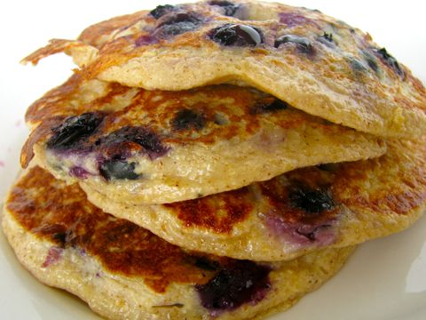

Blueberry Protein Pancakes

Description
good source of protein in the morning that actually tastes good, makes 3 large pancakes
Ingredients
- 1/3 cup cottage cheese
- 1/3 cup instant oats
- 1/8 teaspoon of cinnamon
- 1/4 vanilla extract
- 1/2 teaspoon baking powder
- 2 large eggs
- 50g of blueberries
- 2-3g of butter or non-stick oil
- sugar-free syrup
Instructions
- mix cottage cheese, oats, cinnamon, vanilla, eggs, and baking powder in blender until smooth.
- heat snon-stick pana nd add butter/oil of choice to pan.
- pour mixture into pan. pour near the outside of the pan until you have your desired pancake radius.
- add blueberries to the raw side of the pancake.
- when side is browning (a minute or so), flip pancakes.
- when the other side is brown, flip onto plate and serve with syrup.
Nutrition
- 305 Calories
- 14g Fat
- 443mg Sodium
- 16g Carbs
- 5g Sugar
- 24g Protein